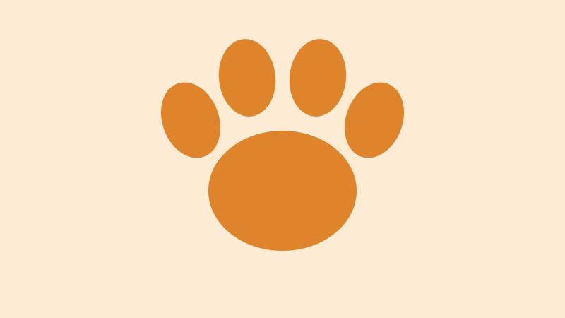
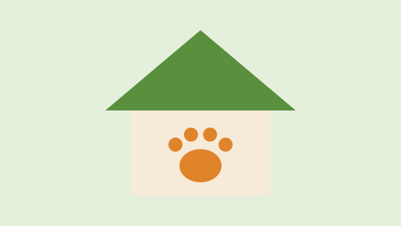

Missão
Resgatar animais em situação de abandono e maus-tratos e encontrar famílias que os acolham para a vida toda.
Somos uma associação sem fins lucrativos que resgata, cuida e encaminha cães e gatos para adoção responsável desde 2015.
Quero adotar Seja voluntário
Todos castrados, vacinados e microchipadosTrabalhamos para que cada animal resgatado encontre uma família que fique com ele para a vida toda.
Conheça nossos projetosResgatar animais em situação de abandono e maus-tratos e encontrar famílias que os acolham para a vida toda.
Um futuro sem animais abandonados nas ruas, com guarda responsável como regra.
Respeito à vida, responsabilidade, transparência e educação.
Começamos em 2015 com quatro amigos e um cachorro resgatado. Hoje temos um abrigo com 120 vagas, uma rede de 60 lares temporários e mais de 150 voluntários. Todo animal sai castrado, vacinado e microchipado.

Existe um jeito de participar para cada momento da sua vida.
Quer visitar o abrigo, tirar dúvidas sobre adoção ou entregar uma doação? Fale com a nossa equipe.
Doações no abrigo: de terça a domingo, das 10h às 17h.